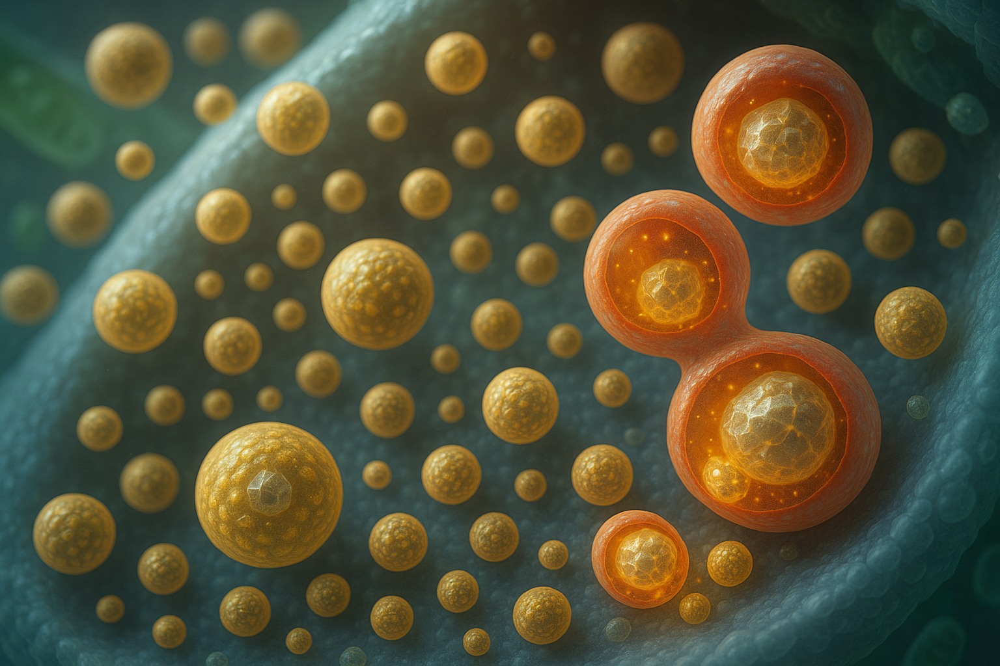

Insulin granule turnover
Lysosomal routing versus secretion shapes β cell output and glucose control.
What we have shown so far
- SINGD/crinophagy paradigm: Under nutrient stress, newly formed insulin granules are diverted to lysosomes instead of secretion, reducing insulin stores and activating lysosomal mTORC1, which transiently suppresses macroautophagy.
- PKD as a nutrient state dial: Protein kinase D activity couples nutrient state to the decision between secretion and lysosomal degradation of nascent granules.
- Pathophysiology: In metabolic stress and diabetes models, excessive lysosomal degradation of nascent granules contributes to β cell dysfunction; modulating this route impacts disease onset and severity in vivo.
Project
Aim 1: Quantify nascent granule flux
Establish robust, endogenous readouts of granule → lysosome flux across nutrient contexts in β cells and human islets.
Aim 2: Membrane contacts and lipid logic
Test whether tuning ER-TGN contacts and a TGN lipid code biases nascent granules toward secretion versus lysosomal routing.
Aim 3: PKD causality
Map how PKD activity writes the contact and lipid state and sets the fusion readiness that determines granule fate.
Aim 4: Disease relevance
Probe whether dialing this decision preserves insulin content and GSIS in diabetic islets.
Key tools (selected)
- Endogenous imaging of granule → lysosome routing in β cells and islets
- Live reporters for PI4P and accessible cholesterol at the TGN
- Acute modulation of ER-TGN contacts and secretory/lysosomal fusion steps
- Nutrient/kinase dialing to connect p38δ → PKD with routing outcomes
- Functional readouts: insulin content and GSIS
Public overview. Operational protocols, constructs, and parameter values are intentionally not disclosed.